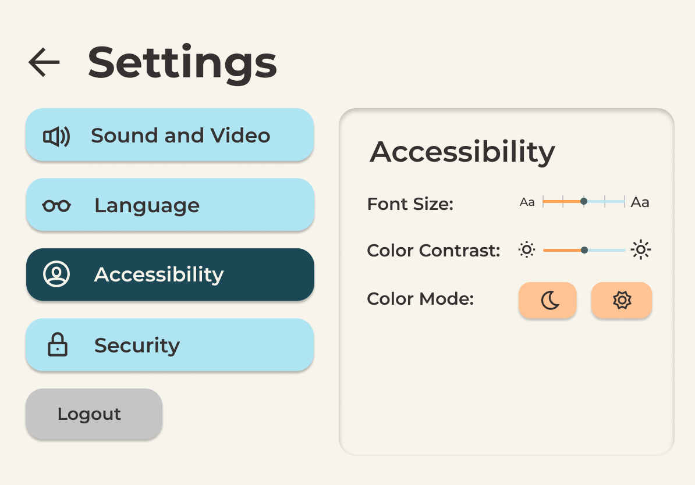
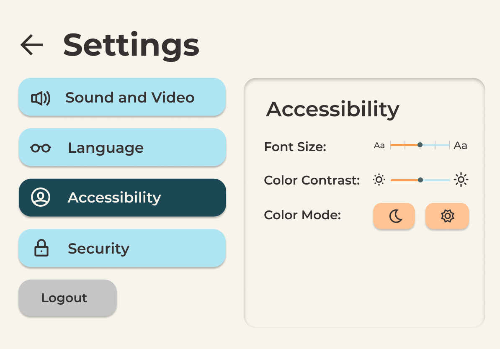

Together Video App Prototype
Worked in a team of four to develop a prototype for Together Video App, a
startup that connects young children with grandparents and other long distance
relatives.
Practiced iterative design techniques and collected user feedback.
Introduction
In this project, we practiced iterative design by creating a prototype of a tablet app based on the concept of Together Video App. The developers of Together describe it as a video calling app that provides a more engaging way for kids and grandparents to interact. It also features an easy-to-use interface and interactive activities like games and reading.
Research
While we weren't allowed to allowed to look at the official design of Together, we were able to draw from our own research, experiences, and feedback from peers to focus on a couple main goals:
- Creating an interface that is easy to learn and simple to understand
- Ensuring that users have a safe and enjoyable experience
- Balancing the ability of parents to control the app and the ablity of children to use it independently
- Tailoring the app features to our audience: grandparents, young children, and parents
Initial Sketches
Featured below are some of our initial sketches, which generally focus on the design of three main screens: a home screen featuring all the contacts, an in-call screen with activities to choose from, and a settings section.

Lo-Fi Wireframes
We then used our sketches to make lo-fi wireframes. Some ideas that we all agreed upon included displaying contacts visually, creating an call confirmation screen, featuring the activities in-call, and a playful color palette.
Prototype
Once we figured out our general structure and flow, we made a prototype in Figma. We tried to be as consistent as possible, while still maintaining a simple yet playful theme.

Feedback and Revised Prototype
We then participated in an in-class critique with an industry mentor and got feedback regarding design choices and future improvements. A few of these points are summarized below:
- More specific labeling and directions for the activity icons
- Making the app kid-safe, protecting the settings
- Consider a parental perspective for protecting children
- Show physical differences for font size
- Some settings don't really make sense as buttons
- No clear way to exit from activities
- General compliments on aesthetic and interface :)
We were then able to make some changes to our prototype and added some extra screens to better capture the app's flow.
For example, we updated our in-call interface by adding text labeling for each button, increasing the color contrast, and adding an 'x' to exit.


We also added a security check to our settings page and made the options in settings more clear.

 

Check out the full interactive prototype below:
User Testing
After updating our prototype, we received more feedback through UserTesting.com.
Users were expected to be able to log into the app, make a call, and explore a few options we had for in-call activities. Most users were able to complete the tasks easily, and we also received some compliments about how simple & easy to use our interface was.
There were some notes about including confirmation screens after adding a contact and clicking on a contact on the home page. Overall though, we loved that some parents expressed immediate understanding of and excitement towards the concept. Attached are some of the videos obtained during our user testing:
Conclusion
In the end, we also sent our prototype to the Together App team and are waiting for their reply.
This project helped show us the importance of being able to design iteratively, as there are always improvements that can be made. While making this prototype, we were constantly reminded to consider not only the physical functions of each element, but also think about the importance of overarching features like security.
We also found it really valuable to work in a group because of the way it forced us to re-evaluate our choices and work towards designing for a wider range of perspectives.